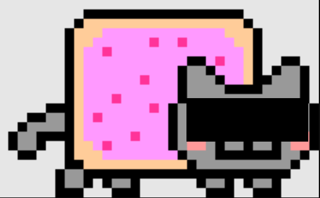

XJ-404
【】中心页 » XJ-404
来自SCP基金XJ分部信息与认知危害部门的提醒
以下的文档中可能描述了一个信息或认知危害。请不要尝试以任何手段复制、重现项目，请尽量不要想象项目。如果你认为你已被感染，请立刻联系最近的信息与认知危害部门，并留在原地不要行动。一支小队会尽快前来处理。你不需要接种模因疫苗；以下的文件已经受到严格的审查，只要不进行上述违规行为你就不会受到感染。你可以继续了。
——Dr.███
项目编号：XJ-404

从XJ-404中截得的静止帧。认知危害已消除。
项目等级：Safe
特殊收容措施：对在线评测平台chagou-online-judge的监控将持续进行。正在调查人员PoI-XJ-001（"老徐"）和PoI-XJ-002（"常中██"）。
禁止对XJ-404进行实验。严禁在接种模因疫苗的情况下突破XJ-404访问chagou-online-judge内的文件。违反者可能酌情予以记忆删除并放归帷幕外或就地处决。
严禁对【】中有证据显示其存在但又失踪的人员进行深入调查。
描述：XJ-404是一异常动态图片，出现于在线评测平台chagou-online-judge中。
XJ-404表现出认知危害。认知到XJ-404的人员将会遭遇记忆覆写并暂时忘记其行动目的，并对特定文件表现出极大的嫌恶。
chagou-online-judge完全开放它的一切文件，但是会对没有足够权限的人员展示XJ-404，这一般会阻止人员继续访问；但任何接种了模因疫苗的人员都可以不受XJ-404危害。
未知PoI-XJ-001（"老徐"）和XJ-010等实体是如何避免XJ-404危害的。目前推测认为其所在理念圈与人类不同。